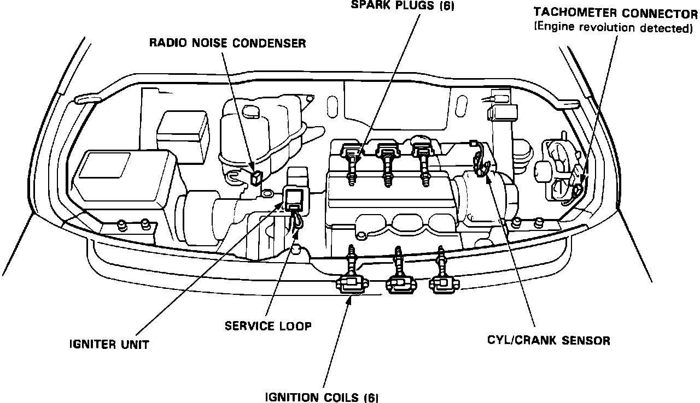

Crankshaft Position Sensor: Locations
Component Location:

CYL/CRANK SENSOR
The CYL/CRANK sensors are located on the passenger side of the engine compartment next to the alternator.
ELECTRONIC CONTROL UNIT (ECU)
Mounted directly behind the passenger seat.
IGNITER UNIT
The ignitor unit is mounted on the engine, drivers side.
IGNITION COILS
The ignition coils are located at each cylinder.
RADIO NOISE CONDENSER
The radio noise condenser is located in the engine compartment near the expansion tank.
TACHOMETER CONNECTOR
The tachometer connector is located on the passenger side of the engine compartment near the fan.